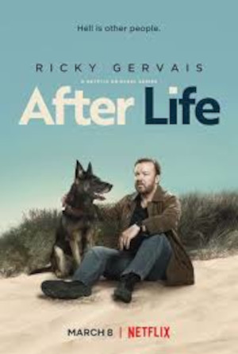
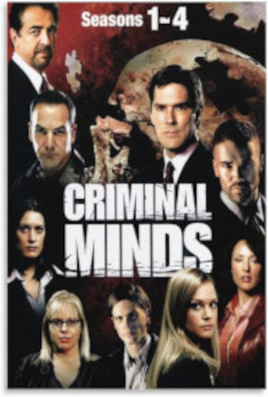

| Filmes | Séries |
|---|
| Dexter | |||||||||||
|---|---|---|---|---|---|---|---|---|---|---|---|
| 4,9 | Dexter é um especialista forense que passa o dia solucionando crimes e a noite cometendo assassinatos. Inteligente e bonito, o assassino em série vive em conflito com seu instinto de matador e o desejo pela felicidade. | ||||||||||
| Crime | |||||||||||
| 2006 | |||||||||||
| Um Senhor Estagiário | |||||||||||
|---|---|---|---|---|---|---|---|---|---|---|---|
| 4,9 | Começar um novo emprego pode ser um grande desafio, especialmente para alguém aposentado. Tentando voltar ao mercado de trabalho, o viúvo Ben, de 70 anos, aproveita a oportunidade para se tornar um estagiário sênior em um site de moda. Ben logo se torna popular entre seus colegas de trabalho mais jovens. | ||||||||||
| Comédia | |||||||||||
| 2015 | |||||||||||
| A proposta | |||||||||||
|---|---|---|---|---|---|---|---|---|---|---|---|
| 4,8 | Margaret é uma poderosa editora de livros que corre o risco de ser deportada para o Canadá, seu país natal. Para poder permanecer em Nova York, ela diz estar noiva de Andrew, seu assistente. O jovem aceita ajudá-la, mas impõe algumas condições, entre elas ir para o Alasca e conhecer sua família excêntrica. Com um oficial da imigração sempre à espreita, eles têm que seguir o plano de casamento. | ||||||||||
| Comédia | |||||||||||
| 2009 | |||||||||||
| Snowden | |||||||||||
|---|---|---|---|---|---|---|---|---|---|---|---|
| 4,0 | Depois de trabalhar durante anos na Agência de Segurança Nacional, Edward Snowden decide entregar documentos secretos de ações de invasão de privacidade do governo dos Estados Unidos. | ||||||||||
| Mistério | |||||||||||
| 2016 | |||||||||||
| A Identidade Bourne | |||||||||||
|---|---|---|---|---|---|---|---|---|---|---|---|
| 4,3 | Depois de trabalhar durante anos na Agência de Segurança Nacional, Edward Snowden decide entregar documentos secretos de ações de invasão de privacidade do governo dos Estados Unidos. | ||||||||||
| Ação | |||||||||||
| 2002 | |||||||||||
| Diário de uma paixão | |||||||||||
|---|---|---|---|---|---|---|---|---|---|---|---|
| 4,9 | Na década de 1940, na Carolina do Sul, o operário Noah Calhoun e a rica Allie se apaixonam desesperadamente, mas os pais da jovem não aprovam o namoro. Noah é enviado para lutar na Segunda Guerra Mundial, e parece ser o fim do romance. Enquanto isso, Allie se envolve com outro homem. No entanto, a paixão deles ainda não acabou quando Noah retorna para a pequena cidade anos mais tarde, próximo ao casamento de Allie | ||||||||||
| Drama | |||||||||||
| 2004 | |||||||||||
| O pior vizinho do mundo | |||||||||||
|---|---|---|---|---|---|---|---|---|---|---|---|
| 4,8 | Otto Anderson, um viúvo mal-humorado e enraizado em seus costumes, encontra uma aliada em sua nova vizinha Marisol, levando a uma amizade improvável que vai colocar seu mundo de cabeça para baixo. | ||||||||||
| Drama | |||||||||||
| 2022 | |||||||||||
| Recomeço | |||||||||||
|---|---|---|---|---|---|---|---|---|---|---|---|
| 4,0 | Uma artista encontra o amor na Itália e embarca em uma transformadora jornada de perda, resiliência e esperança que vai ultrapassar culturas e continentes. | ||||||||||
| Drama | |||||||||||
| 2022 | |||||||||||
| Falando a real | |||||||||||
|---|---|---|---|---|---|---|---|---|---|---|---|
|
|
3,7 | Um terapeuta em luto começa a quebrar as regras dizendo a seus clientes exatamente o que ele pensa. Ignorando seu treinamento e ética, Jimmy se vê fazendo grandes e tumultuosas mudanças na vida das pessoas, incluindo a sua própria. | |||||||||
| Drama | |||||||||||
| 2023 | |||||||||||
| Entrevias | |||||||||||
|---|---|---|---|---|---|---|---|---|---|---|---|
| 4,1 | Depois de trabalhar durante anos na Agência de Segurança Nacional, Edward Snowden decide entregar documentos secretos de ações de invasão de privacidade do governo dos Estados Unidos. | ||||||||||
| Drama | |||||||||||
| 2022 | |||||||||||
| After Life | |||||||||||
|---|---|---|---|---|---|---|---|---|---|---|---|
|  | 4,9 | Depois de trabalhar durante anos na Agência de Segurança Nacional, Edward Snowden decide entregar documentos secretos de ações de invasão de privacidade do governo dos Estados Unidos. | |||||||||
| Drama | |||||||||||
| 2019 | |||||||||||
| Ozark | |||||||||||
|---|---|---|---|---|---|---|---|---|---|---|---|
| 4,8 | Marty, um consultor financeiro, leva a família a um resort em Ozarks para mantê-la segura depois que as suas negociações com um cartel de drogas mexicano dão errado. | ||||||||||
| Drama | |||||||||||
| 2017 | |||||||||||
| Criminal Minds | |||||||||||
|---|---|---|---|---|---|---|---|---|---|---|---|
|  | 4,9 | Um esquadrão de elite do FBI estuda as maiores mentes criminosas, antecipando seus próximos passos, antes que eles ataquem novamente. A fim de identificar as motivações dos criminosos e detê-los, cada membro da equipe usa a experiência que possui. | |||||||||
| Drama | |||||||||||
| 2005 | |||||||||||
| The Rookie | |||||||||||
|---|---|---|---|---|---|---|---|---|---|---|---|
| 4,7 | John Nolan, um homem de 40 anos, deixa para trás sua vida confortável em uma cidade pequena para viver seu sonho de ser um agente policial no Departamento de Polícia de Los Angeles. Como o novato mais velho, ele enfrenta a descrença de seus colegas. | ||||||||||
| Drama | |||||||||||
| 2018 | |||||||||||
| Bold Type | |||||||||||
|---|---|---|---|---|---|---|---|---|---|---|---|
| 4,8 | Três mulheres que trabalham em uma revista de Nova York tentam equilibrar carreira, romance, amizade e a vida na cidade grande. | ||||||||||
| Drama | |||||||||||
| 2017 | |||||||||||
| Elementary | |||||||||||
|---|---|---|---|---|---|---|---|---|---|---|---|
| 4,0 | Sherlock deixa a Scotland Yard e se muda de Londres para Nova York após um período em um centro de reabilitação. Ele é obrigado pelo pai a dividir seu apartamento com a Dra. Joan Watson, que perdeu a licença quando um paciente morreu. | ||||||||||
| Drama | |||||||||||
| 2012 | |||||||||||